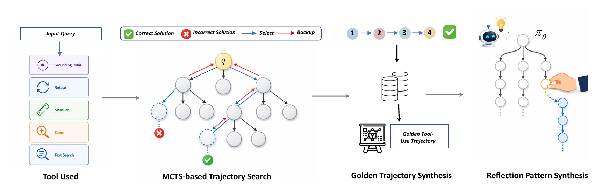
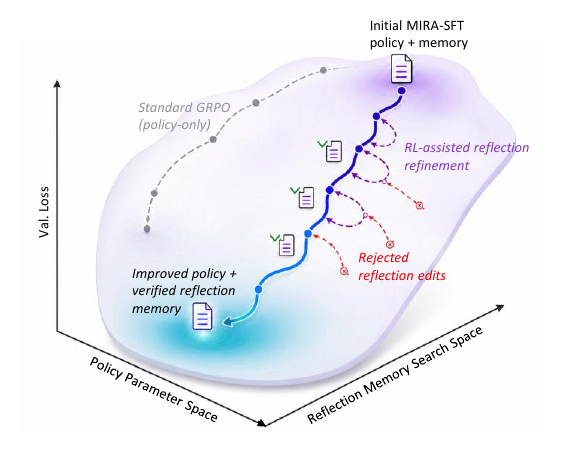
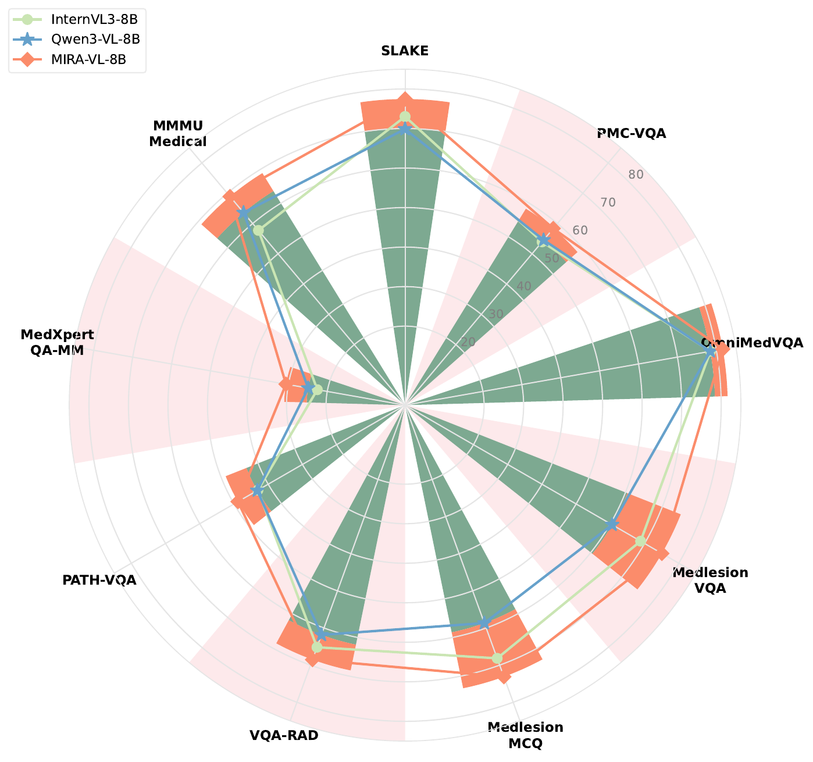

Overview
MIRA enables diagnosis-oriented reasoning through autonomous evidence search and reflective verification. It decides when external tools are necessary, checks whether acquired evidence supports the current hypothesis, and corrects weak or contradictory reasoning.
Tool-Augmented MCTS Data Engine
Our supervised fine-tuning stage uses tool-augmented Monte Carlo Tree Search to explore diverse diagnostic hypotheses and jointly verify visual grounding and semantic consistency during tree expansion.

Online Reflective Principle Evolution
During reinforcement learning, failures are distilled into reusable diagnostic principles. Candidate memory updates are accepted only when they improve held-out rollout reward under the same frozen policy.

Results
MIRA consistently improves over its Qwen3-VL-8B backbone across medical visual reasoning benchmarks while reducing harmful and unnecessary tool use.

Resources
Model, data, and code resources will be released after preparation.